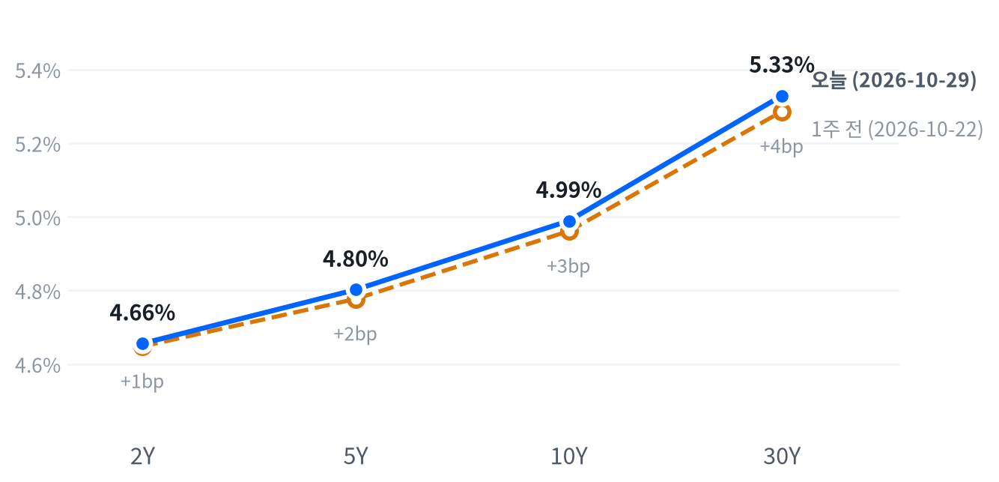

알파벳이 검색 성장 둔화와 마이너스 잉여현금흐름으로 12.64% 급락해 나스닥을 끌어내렸지만, S&P500 안의 평균 종목은 올랐다. 3분기 GDP가 예상을 웃돌고 근원 PCE가 예상과 같게 나오자 단기 금리가 내려 소형주와 경기민감 업종을 받쳤다.
장 마감 뒤 아마존도 현금흐름 부담을 드러내며 시간외에서 밀렸다. 대형 AI 플랫폼에서 소형주로 상대 성과가 옮겨 가는 흐름이 이어지는지를 11월 5일 종가까지 확인한다.
알파벳 급락이 지수를 끌어내리는 사이 나머지 시장은 올랐다. 알파벳은 3분기 검색 매출 성장이 두 분기 연속 예상을 밑돌고 잉여현금흐름이 마이너스로 나오자 12.64% 내렸고, 상장 이래 최대 일간 낙폭이라는 보도가 나왔다. 같은 날 아침 GDP가 예상을 웃돌았는데도 근원 PCE가 예상과 같게 나오자 2년물 금리는 크게 내렸고, 러셀2000은 1.01% 올랐다.
우리는 이 갈림을 한 종목의 사고보다 대형 AI 플랫폼의 수익화 의문이 지수 안에서 상대 성과를 옮기는 움직임으로 본다. 설비투자는 늘리는데 검색 성장과 현금흐름이 뒤처진다는 알파벳의 문제를, 장 마감 뒤 아마존이 현금흐름 부담과 함께 이어받았기 때문이다. 가장 강한 반론은 알파벳 한 종목의 지수 효과라는 설명이다. 애플 실적이나 저가 매수로 대형주가 돌아오면 갈림은 되돌려지고, 소형주 강세가 단기 금리 하락에만 기댔다면 금리 반등과 함께 꺾인다. 포지셔닝이나 자금 흐름을 잰 자료가 없어 시장이 이 회전을 얼마나 반영했는지는 알 수 없다. 「GDP 호조에 소형주 랠리」라는 설명은 언론의 서술일 뿐이다.
3개월 시계의 업종 판단에서 이 해석은 초대형 기술주와 소프트웨어 업종의 상대수익률에 부담이고, 소형주·금융·헬스케어 쪽에는 힘이 된다. 같은 날 서비스나우·포티넷 급락이 AI가 소프트웨어 매출을 잠식한다는 우려를 되살려 소프트웨어 쪽 부담을 키웠다. 하루짜리 갈림이라 새 아이디어로 내지 않고, 대형 성장주 대비 소형주의 상대 흐름을 다섯 세션 동안 지켜본다. 이 흐름을 지수 ETF 사이의 상대 거래로 옮기면 러셀2000은 금융·산업재·헬스케어에, 나스닥은 기술·커뮤니케이션에 몰려 있어 업종 구성 차이가 결과를 좌우한다. 금리 쪽에서는 12월 인상 확률이 낮아졌지만 여전히 80% 안팎이라 인상 경로가 바뀌었다고 보지 않는다.
확인 기준은 10월 29일 종가 대비 11월 5일 종가의 누적 등락률이다. 러셀2000 누적 등락률에서 나스닥 누적 등락률을 뺀 값이 +1.65%p 이상이면 이 해석을 뒷받침하고, -1.65%p 이하이면 해석은 약해져 알파벳 한 종목의 지수 효과를 우선 설명으로 본다. 그 사이이거나 같은 기간 2년물 누적 변화가 ±25bp를 넘으면 결론을 내지 않는다. 첫 자료는 10월 30일 아마존 정규장 반응이고, 11월 2일 애플 실적과 11월 6일 10월 고용이 이어진다.
| 지수 | 종가 | 등락 | 기준일 |
|---|---|---|---|
| 닛케이225 | 63,954.19 | +1.08% | 10월 28일 |
| 항셍 | 23,094.83 | +0.23% | 10월 28일 |
| 상해종합 | 3,681.47 | +0.91% | 10월 28일 |
| DAX | 26,039.68 | +1.31% | 10월 29일 |
| FTSE100 | 10,722.07 | +0.26% | 10월 29일 |
| 유로스톡스50 | 6,207.07 | +0.64% | 10월 29일 |
| VIX | 17.20 | +0.29p | 10월 29일 |
아시아 세 지수는 들어온 마지막 종가인 10월 28일 값이고, 유럽 세 지수와 VIX는 10월 29일 값이다. VIX 등락은 포인트다.
미국은 아시아·유럽과 엇갈렸다. 아시아 세 지수는 10월 28일 종가로 모두 올라 평균 0.74%였고, 닛케이가 1.08%로 가장 강했다. 유럽도 10월 29일 세 지수가 모두 올랐고 DAX가 1.31%로 앞섰다. ECB는 예상대로 정책금리를 2.5%에서 동결했다. 미국에서는 알파벳 실적이 대형 기술주를 눌러 이 흐름이 끊겼다.
지수의 낙폭은 개장 전에 생겼다. 전날 장 마감 뒤 알파벳 실적이 나오자 S&P 선물(ES)은 16:00(ET) 7,820에서 밀려 밤 23:30(ET) 7,740까지 내렸다. 나스닥 선물(NQ)은 22:30(ET) 29,483이 저점이었다. 08:30(ET)에는 3분기 GDP와 9월 PCE가 함께 나왔다. 현물은 S&P -0.57%, 나스닥 -1.36%의 갭으로 내려 출발했고, 러셀2000만 +0.45%로 올라 출발했다.
평균적인 종목은 지수를 따라가지 않았다. S&P500 동일가중 지수가 시총가중 지수보다 1.58%p 앞서, 지수 하락은 소수가 끌어내림으로 요약된다. 알파벳을 비롯한 대형 기술주 몇 종목이 지수를 끌어내렸고 평균 종목은 올랐다. 세 지수는 모두 하루 범위의 중간쯤에서 끝났다.
저점권·고점권 경계는 최근 2,259거래일의 일간 종가 위치 이력으로 다시 잰 기준이다.
알파벳 실적이 대형 기술주를, 성장·물가 지표와 단기 금리 하락이 나머지 시장을 움직였다. 기술과 커뮤니케이션서비스 두 업종만 내리고 나머지 아홉 업종이 올랐고, S&P 성장주가 1.46% 내리는 동안 가치주는 0.89% 올랐다. 장 마감 뒤에는 아마존이 매출·순이익 예상 하회로 시간외에서 7% 넘게, 인텔이 4분기 가이던스 부진으로 16% 내렸다는 보도가 나왔다. 이 움직임은 이날 종가에 들어 있지 않다.
출처: CNBC
| 지수 | 종가 | 등락률 |
|---|---|---|
| 러셀2000 | 2,859.22 | +1.01% |
| S&P500 가치주 | 241.36 | +0.89% |
| 다우존스 | 52,342.56 | -0.25% |
| S&P500 | 7,720.39 | -0.30% |
| 나스닥 | 26,184.72 | -1.38% |
| S&P500 성장주 | 138.13 | -1.46% |
| 섹터 | 등락률 |
|---|---|
| 헬스케어 | +2.40% |
| 부동산 | +2.21% |
| 필수소비재 | +1.54% |
| 유틸리티 | +1.53% |
| 금융 | +1.44% |
| 소재 | +1.29% |
| 산업재 | +0.97% |
| 경기소비재 | +0.75% |
| 에너지 | +0.38% |
| 기술 | -1.18% |
| 커뮤니케이션서비스 | -1.87% |
알파벳 급락에 S&P500은 0.30% 내린 7,720으로 끝났지만, 최근 2년(504거래일) 가운데 이보다 높았던 날이 26일뿐인 고점권은 지켰다. 나스닥은 1.38% 내린 26,185, 다우는 0.25% 내린 52,343이고, 러셀2000만 올라 2,859가 됐다. 나스닥과 러셀2000은 반대 방향으로 갈렸다.
하루 움직임은 평소 하루 변화폭 대비 나스닥 1.47배, 러셀2000 1.25배, S&P500 0.51배였다.
나스닥은 낙폭 대부분을 개장 갭으로 안고 시작해 정규장에서는 시가 부근을 맴돌다 끝났다. 알파벳 실적이 밤사이 가격에 반영된 뒤 장중 매도로 번지지는 않았다는 뜻이다. 러셀2000은 GDP·PCE 발표 뒤 오전에 더 올라 11:30(ET)에 시가보다 0.89% 높은 고점을 찍었다.
지수 하락은 두 업종이 만들었다. 추정 기여도로 기술이 -0.40%p, 커뮤니케이션서비스가 -0.24%p를 깎았고, 헬스케어가 +0.23%p, 금융이 +0.15%p를 보탰다. 업종 합으로 설명되지 않는 부분은 -0.32%p로 작지 않다.
추정 기여도는 업종 비중을 직접 받지 않아, 최근 252거래일 지수·업종 수익률로 추정한 비중을 곱한 값이다. 소재와 부동산은 비중을 추정할 수 없어 빠졌다.
이 하락을 넓은 매도로 보지 않는다. 두 업종이 지수 하락을 다 설명하고 평균 종목은 올랐다. 헬스케어 강세는 일라이 릴리 실적이 이끌었고, 금융·부동산 강세는 단기 금리 하락과 같은 날 나왔다. 최근 60거래일 주식과 금리는 거의 따로 움직여, 금리 하락이 지수 전체를 끌어올리는 힘은 약했다. VIX도 거의 움직이지 않아 알파벳 급락이 위험회피로 번지지 않았다.
| 만기 | 종가(10월 29일) | 전일比(bp) | 1주 전(10월 22일) | 주간 변화(bp) |
|---|---|---|---|---|
| 2Y | 4.656% | -7.9 | 4.648% | +0.8 |
| 5Y | 4.802% | -6.9 | 4.777% | +2.5 |
| 10Y | 4.989% | -5.6 | 4.961% | +2.8 |
| 30Y | 5.329% | -3.2 | 5.286% | +4.3 |
GDP·PCE 발표일에 단기물이 금리 하락을 이끌었다. 2년물은 7.9bp 내린 4.656%, 10년물은 5.6bp 내린 4.989%로 다시 5% 아래로 내려왔다. 30년물은 3.2bp 내린 5.329%다. 10년물은 그래도 최근 2년(504거래일) 가운데 이보다 높았던 날이 26일뿐인 고점권에 있다.

네이버 국채 종가, 전 만기 10월 29일 기준. 1주 전(10월 22일)과 비교하면 2년물 0.8bp, 10년물 2.8bp, 30년물 4.3bp 올라 만기가 길수록 더 올랐다. 10년물 하루 변화는 평소 하루 변화폭의 1.13배였다.
하루로는 단기물이 더 내린 불 스티프닝이다. 2s10s는 33.3bp로 전일 31.0bp에서 2.3bp 넓어졌고, 5s30s는 52.7bp다. 한 주로 보면 전 만기가 오른 가운데 장기물이 더 올라 베어 스티프닝이다. FOMC 당일에는 장기물이, 이날은 단기물이 커브를 가파르게 만들었다.
앞쪽 금리를 끌어내린 것은 근원 물가가 예상 경로를 벗어나지 않았다는 확인이라고 본다. 3분기 GDP는 예상을 웃돌았지만 9월 근원 PCE가 예상과 같아 인상 확률의 위쪽 꼬리가 깎였고, 12월 인상 확률이 하루 새 낮아졌다는 보도가 나왔다. 같은 지표가 매파적 연준 전망을 받쳤다는 해석도 나와 지표 해석은 엇갈렸다. 알파벳 급락에 따른 안전자산 수요도 거론되지만, VIX가 거의 움직이지 않아 위험회피의 힘은 약했다고 본다.
10년물 하락의 내역은 아직 다 나눌 수 없다. FRED 10년 기대인플레는 10월 29일 3bp 내린 2.35%, 5년 기대인플레는 2bp 내린 2.47%였지만, 같은 날 실질금리는 아직 게시되지 않았다. 명목을 실질과 기대인플레로 나눈 최신 자료는 10월 28일 것이다. 그날 10년물 6bp 상승은 실질금리 3bp와 기대인플레 3bp가 함께 만들었다. 기대인플레가 FOMC 당일 상승분을 하루 만에 되돌렸다는 데까지가 지금 말할 수 있는 범위다.
신용시장은 조용했다. 하이일드 스프레드는 10월 28일 3.14%로 하루 4bp 좁아졌고, 기간프리미엄 추정치는 10월 23일 0.94%다.
5년 뒤 5년 명목금리 5.25%, 실질 2.98%(10월 28일 기준). 기대인플레 쪽 수치와의 교차검증은 할 수 없었고, 위험 프리미엄이 섞인 값이다.
출처: CNBC, FXStreet
| 통화쌍 | 종가 | 등락률 | 기준일 |
|---|---|---|---|
| DXY | 102.036 | -0.08% | 10월 29일 |
| USD/KRW | 1,338.91 | -0.20% | 10월 29일 |
| USD/JPY | 157.958 | +0.02% | 10월 29일 |
| EUR/USD | 1.1166 | +0.07% | 10월 29일 |
단기 금리가 크게 내린 날에도 달러는 거의 움직이지 않았다. 달러지수는 0.08% 내린 102.036, 유로/달러는 0.07% 오른 1.1166, 엔/달러는 157.958엔으로 제자리였다. 원/달러는 0.20% 내린 1,339원으로, 최근 2년(504거래일) 가운데 이보다 낮았던 날이 8일뿐인 원화 강세권에 있다.
미국 쪽 금리차는 달러에 불리하게 움직였지만 달러지수는 거의 반응하지 않았다. 유럽에서는 ECB가 동결하면서도 머니마켓이 12월 인상 확률을 약 67%로 반영하고 있다는 보도가 나와, 유로 쪽 금리 기대도 높게 남아 있었다. 유럽 금리 자료가 없어 상대금리가 실제로 얼마나 줄었는지는 판단하지 못한다. 엔은 10월 30일 일본은행 결정을 앞두고 움직이지 않았고, 시장은 1.25% 동결을 예상한다는 보도가 나왔다.
환율은 뉴욕 16:00 ET 가격, 전 거래일 같은 시각 대비다.
출처: CNBC, Investing.com
| 품목 | 종가 | 등락률 |
|---|---|---|
| WTI | $102.77 | +1.01% |
| Brent | $111.56 | +0.95% |
| 천연가스 | $2.922 | -3.37% |
| 금 | $4,034.10 | -1.35% |
유가는 장 초반 100달러 아래로 밀렸다가 되올랐다. WTI는 1.01% 오른 102.77달러, 브렌트는 0.95% 오른 111.56달러로 끝났다. WTI는 여전히 100달러를 넘는 높은 자리에 있다.
WTI는 장 초반 99.79달러까지 내렸다가 마감 직전 102.90달러로 그날 고점을 찍었다. 미국이 이란과 협상을 재개하려 한다는 보도가 평화 기대를 키워 장 초반 유가를 눌렀고, 중동 분쟁 확대 우려가 이를 상쇄했다는 해석이 나왔다. 오후 반등을 설명하는 재료는 확인되지 않았다. 두 유종의 가격 차는 8.79달러로 전일(8.77달러)과 거의 같다. 표의 WTI는 12월물, 브렌트는 1월물이라 가격 차에는 만기 차이가 들어 있다.
금은 1.35% 내린 4,034달러로, 평소 하루 움직임만큼 움직였다. 금리와 달러가 함께 내린 날의 하락이라 실질금리나 달러로는 설명되지 않고, 최근 60거래일 금과 금리는 거의 따로 움직였다. 금 하락의 원인을 설명한 자료는 찾지 못했다. 천연가스는 3.37% 내린 2.922달러다.
최근 60거래일 동안 열 개 자산의 움직임에서 가장 큰 공통 요인은 전체의 41.4%를 설명하고, 이 요인은 여전히 주식이 이끈다. 함께 움직이는 자산군은 그 직전 구간의 금리가 아니라 원자재다.
WTI 수준은 최근 2년(504거래일) 가운데 이보다 높았던 날이 13일뿐인 자리다.
원자재·환율은 뉴욕 16:00 ET 가격, 전 거래일 같은 시각 대비다. 결제가와 다를 수 있다.
출처: CNBC, The Globe and Mail
미국 경기 국면은 성장 보합·물가 교착인 교착을 10월 14일부터 12영업일째 유지한다. 새 경제지표로 3분기 GDP·9월 PCE·주간 실업수당 청구가 나왔지만, 성장 점수 0.009와 물가 점수 0.003은 어느 쪽으로도 기울 만큼이 아니고 둘 다 지금 국면을 가리킨다. 강한 3분기 성장은 7~9월의 이야기이고 9월 실질 소비가 멈춰 분기 말의 힘은 약했다. 헤드라인 물가는 올랐지만 근원이 예상 경로 안에 머물러 물가 재가속으로 볼 근거가 되지 못했다.
고용 축은 개선에서 보합으로 내려섰다. 일곱 지표 가운데 넷이 개선, 셋이 악화로 갈렸다. 주간 청구는 해고 쪽이 단단하다고 말한다(신규 청구 4주 평균 196,750건, 계속 청구 1,701,000건). 반대편에는 9월 비농업 고용 +29K와 구인건수·시간당 임금의 둔화가 남는다. 고용축 +0.157
| 지표 | Actual | Forecast | Previous | 발표일 | 컨센 대비 | 직전 대비 | 추세 |
|---|---|---|---|---|---|---|---|
| 구인건수(8월) | 7,079K | — | 7,335K | 2026-08 기준월 | 악화 | 악화(미미) · 3개월 평균 7,336K → 7,199K | |
| 신규 실업수당 청구 | 194,000 | — | 195,000 | 2026-10-29 (10월 24일 주간) | 개선 | 개선(미미) · 4주 평균 200K → 197K | |
| 신규 청구 4주 평균 | 196,750 | — | 198,000 | 2026-10-29 (10월 24일 주간) | 개선 | 개선(완만) · 4주 평균 203K → 198K | |
| 계속 실업수당 청구 | 1,701,000 | — | 1,722,000 | 2026-10-29 (10월 17일 주간) | 개선 | 개선(완만) · 4주 평균 1,723K → 1,710K | |
| 비농업 고용 변화(9월) | +29K | — | +133K | 2026-09 기준월 | 악화 | 악화(미미) · 3개월 평균 +81K → +51K | |
| 실업률(9월) | 4.2% | — | 4.1% | 2026-09 기준월 | 악화 | 개선(미미) · 3개월 평균 4.27% → 4.13% | |
| 평균시간당임금 MoM(9월) | +0.13% | — | +0.32% | 2026-09 기준월 | 악화 | 악화(미미) · 3개월 평균 +0.21% → +0.19% |
DOL은 10월 24일 주간 신규 실업수당 청구가 194,000건으로 1,000건 줄었고, 4주 평균은 196750건이라고 밝혔다. 전주치는 194,000건에서 195,000건으로 상향 수정됐고, 계속 청구의 전주치는 1,728,000건에서 1,722,000건으로 하향 수정됐다. 계절조정 전 청구는 178,851건으로 5,648건 늘었지만, 계절요인이 예상한 증가(6,040건)보다 작아 조정치가 줄었다. 해고가 늘어난다는 신호는 없다. 9월 고용 약세는 해고보다 채용 둔화 쪽이라고 보고, 이 발표는 연준이 인상을 서두르거나 멈출 근거가 되지 못한다.
생산·활동 축은 악화 판정을 유지한다. 다섯 지표 가운데 둘이 악화, 둘이 보합이고 하나가 반대로 간다. 3분기 GDP가 2분기보다 빨라졌지만 보합으로 분류돼 축을 끌어올리지 못했고, 기존주택 판매의 3개월 평균이 뚜렷하게 내려간 것이 판정을 붙든다. 신규주택 판매의 추세 개선이 상충하는 지표로 남는다. 생산·활동축 -0.379
| 지표 | Actual | Forecast | Previous | 발표일 | 컨센 대비 | 직전 대비 | 추세 |
|---|---|---|---|---|---|---|---|
| 산업생산 MoM(9월) | +0.66% | — | +0.06% | 2026-09 기준월 | 개선 | 보합 · 3개월 평균 +0.40% → +0.32% | |
| 내구재주문 MoM(9월) | +1.84% | — | +0.12% | 2026-10-27 (9월분) | 개선 | 악화(미미) · 3개월 평균 +1.70% → +0.95% | |
| 신규주택판매(9월) | 676K | — | 680K | 2026-10-27 (9월분) | 악화 | 개선(미미) · 3개월 평균 652K → 668K | |
| 기존주택판매(9월) | 399만 | — | 393만 | 2026-09 기준월 | 개선 | 악화(뚜렷) · 3개월 평균 4,120K → 3,993K | |
| 실질GDP QoQ 연율(3분기 속보) | +3.4% | 3.1% | +2.2% | 2026-10-29 (3분기) | 상회▲ | 개선 | — |
| S&P Global 종합 PMI(10월 속보) | 57.6 | — | 58.4 | 2026-10-23 | — | — | |
| S&P Global 제조업 PMI(10월 속보) | 56.0 | 55.5 | 55.9 | 2026-10-23 | 상회▲ | — | — |
| S&P Global 서비스업 PMI(10월 속보) | 57.9 | 58.0 | 58.8 | 2026-10-23 | 하회▼ | — | — |
BEA는 3분기 실질 GDP가 연율 3.4% 늘었다고 발표했다(2분기 2.2%). 예상은 3.1%였고 3.2%로 집계한 곳도 있다. BEA는 투자·소비·정부지출이 성장을 이끌었고 수출 감소가 일부를 상쇄했으며, 차감 항목인 수입이 늘었다고 밝혔다. 보도된 기여도 집계로는 소비가 +2.52%p, 사업투자가 +1.66%p, 재고가 +1.61%p를 보탰고 순수출이 -3.32%p를 깎았다. 수입이 재고로 쌓인 구성이라, 두 항목을 걷어 낸 민간 국내 최종구매는 실질 4.9%로 헤드라인보다 강했다는 보도가 나왔다. 성장의 질은 좋지만 사업투자 기여가 AI 설비투자에 크게 기대고 9월 실질 소비가 멈춰, 4분기로 넘어가는 힘은 헤드라인보다 약하다고 본다. 성장 좌표를 가속으로 옮길 근거는 되지 못한다.
소비 축은 보합을 유지하고, 이 축의 지표는 새로 나오지 않았다. 9월 실질 개인소비가 멈췄다는 PCE 쪽 세부도 판정을 바꾸지 못한다. 소비축 +0.249
| 지표 | Actual | Forecast | Previous | 발표일 | 컨센 대비 | 직전 대비 | 추세 |
|---|---|---|---|---|---|---|---|
| 소매판매 MoM(9월) | +0.77% | — | +1.29% | 2026-09 기준월 | 악화 | 보합 · 3개월 평균 +0.61% → +0.55% | |
| 미시간대 소비자심리(9월 확정) | 48.1 | — | 51.7 | 2026-09 기준월 | 악화 | 개선(완만) · 3개월 평균 48.0 → 51.7 |
물가 축은 교착을 유지한다. 여덟 지표 가운데 셋이 재가속, 셋이 둔화, 둘이 교착이고, 새로 나온 PCE 물가와 근원 PCE는 모두 교착으로 분류됐다. 9월 CPI·PPI의 전월비 재가속이 남아 있지만, 미시간대 1년 기대인플레의 3개월 평균이 내려와 상충한다. 물가축 +0.003
| 지표 | Actual | Forecast | Previous | 발표일 | 컨센 대비 | 직전 대비 | 추세 |
|---|---|---|---|---|---|---|---|
| CPI YoY(9월) | 3.72% | — | 3.35% | 2026-09 기준월 | 상승 | 둔화(미미) · 3개월 평균 3.80% → 3.46% | |
| CPI MoM(9월) | +0.65% | — | +0.40% | 2026-09 기준월 | 상승 | 재가속(완만) · 3개월 평균 +0.23% → +0.37% | |
| Core CPI YoY(9월) | 2.57% | — | 2.45% | 2026-09 기준월 | 상승 | 둔화(미미) · 3개월 평균 2.71% → 2.49% | |
| Core CPI MoM(9월) | +0.33% | — | +0.29% | 2026-09 기준월 | 상승 | 재가속(완만) · 3개월 평균 +0.19% → +0.28% | |
| PPI 최종수요 MoM(9월) | +1.34% | — | +0.47% | 2026-09 기준월 | 상승 | 재가속(완만) · 3개월 평균 +0.49% → +0.66% | |
| PCE 물가 YoY(9월) | 3.65% | — | 3.44% | 2026-10-29 (9월분) | 상승 | 교착 · 3개월 평균 3.62% → 3.49% | |
| Core PCE YoY(9월) | 3.12% | 3.1% | 3.03% | 2026-10-29 (9월분) | 부합= | 상승 | 교착 · 3개월 평균 3.10% → 3.05% |
| 미시간대 1년 기대인플레(9월 확정) | 4.6% | — | 4.0% | 2026-09 기준월 | 상승 | 둔화(완만) · 3개월 평균 4.70% → 4.27% |
BEA는 9월 PCE 물가가 전년비 3.6%(FRED 계산 3.65%), 근원이 3.1%로 올랐다고 발표했고, 전월비로는 헤드라인 0.5%·근원 0.3%로 둘 다 예상과 같았다는 보도가 나왔다. 명목 소비는 1,131억 달러 늘었고 그 가운데 상품이 351억 달러, 서비스가 781억 달러였다. FRED 기준 9월 실질 개인소비는 전월비 +0.015%로 사실상 멈췄고(8월 +0.55%), 내구재 소비는 -0.558%로 줄었다(8월 +1.81%). 실질 가처분소득이 0.3% 줄고 저축률이 3.8%로 내려갔다는 보도도 나왔다. 헤드라인은 에너지가 끌어올렸고 근원은 예상 경로 안이라고 본다. 연준 입장에서는 물가 상방 위험과 가계 구매력 소진이 함께 쌓이는 구성이라, 12월 인상 판단을 앞당기지도 거두지도 않는다.
직전 대비는 Actual을 Previous와 비교한 것이고, 추세는 최근 3개월 평균을 그 앞 3개월 평균과 비교한 것입니다(주간 실업수당 청구는 4주 평균끼리). 추세의 세기는 그 지표가 평소 움직이는 폭에 견준 크기이고, 작은 변화는 보합으로 봅니다. 분기 지표인 GDP는 두 비교가 같은 숫자를 보므로 직전 대비만 싣습니다.
연준의 다음 금리 변경은 12월 9일 FOMC의 추가 25bp 인상이라는 판단을 유지한다. CME FedWatch 기준 12월 인상 확률은 하루 새 낮아졌지만, 집계 시각에 따라 92.0%에서 84.0%로, 또는 84.2%에서 79.6%로 전해져 단일 값으로 두지 않는다. 어느 측정으로도 변화가 15%p에 못 미치고 여전히 80% 안팎이라 시점은 12월에 둔다. 근원 PCE가 예상과 같아 인상을 서두를 근거는 약해졌지만, 헤드라인 물가와 강한 성장이 인상 여지를 닫지도 않았다.
12월 9일 FOMC 전까지 연준 성명이나 의장 발언이 추가 인상 여지를 닫으면 12월 인상 중심 판단을 수정한다. 11월 6일 10월 고용에서 실업률이 3월 이후 범위(4.1~4.3%) 위로 올라서면 인상 우위 판단을 철회한다.
근원 물가가 예상 경로에 머물면 정책금리의 위쪽 끝이 낮아지고, 실질금리 하락을 거쳐 장기물과 금에 힘이 되는 경로가 열린다. 이번 발표는 그 첫 단계와 맞지만 장기물 금리는 한 주 동안 오히려 올라 총수익으로는 아직 이어지지 않았다. 근원 PCE 전년비가 3.0%를 밑돌거나 30년물이 5.05%를 밑돌면 채권 판단을 확인하고, 귀금속은 장기 실질금리(TIPS)의 추가 하락이나 금 20일 수익률 +15% 상회가 확인 지표다.
3분기 성장은 강했지만 9월 실질 소비가 멈추고 실질 가처분소득이 줄어, 최종수요가 이익 성장으로 넘어가는 힘은 분기 말로 갈수록 약해졌다. 주식은 성장과 높은 금리가 맞서 방향을 정하지 못하고 업종 사이의 차이로 움직인다. 에너지는 지정학 사건이 가격을 정해 구조적 방향은 중립이다. ISM 제조업 PMI가 50 위에서 재가속하거나 10년물이 4.5%를 밑돌면 주식 판단을 수정하고, 호르무즈 통항 차질이 이어지면 에너지 판단을 다시 연다.
성장이 정체하고 근원 물가가 둔화하면 미국과 다른 나라의 실질금리 차이가 줄어 달러가 약해지는 경로다. 유럽과 캐나다의 금리 기대가 높게 남아 있어 이 경로는 천천히 움직이고, 안전자산 수요와 높은 미국 금리 수준이 맞선다. 달러지수의 20일 변화가 -3%를 넘는 추가 하락이나 FedWatch 인하 확률 확대가 이 판단을 확인하는 지표다.
AI 설비투자 관련 자산은 매크로 국면과 따로 움직인다. 하이퍼스케일러는 올해 설비투자 계획을 유지하고 내년 증가를 예고해 메모리 수요는 살아 있지만, 알파벳·아마존의 현금흐름 악화가 발주자의 지출 여력에 의문을 더했다. 메모리는 수급 사이클이 받치고, AI 인프라는 할인율과 발주자의 자금 조달 부담이 이를 상쇄한다고 본다. 마이크론 등 주요 업체의 연간 가이던스 상향이 이어지면 메모리 판단을 확인하고, 30년물이 5.4%를 넘어서면 AI 인프라의 할인율 부담이 커진다.
발표 뒤 채권시장은 성장보다 물가를 봤다. GDP가 예상을 0.3%p 웃돌았는데도 2년물은 종가로 크게 내렸고, 근원 PCE가 예상과 같았다는 점이 금리 상방 위험을 덜었다는 해석이 나왔다. 주식에서는 경기에 민감한 러셀2000과 금융·부동산이 올랐지만, 지수는 알파벳 실적에 눌렸다. 장중 금리 자료가 없어 발표 직후 반응이 아니라 종가 변화로 본 것이다.
출처: CNBC, Advisor Perspectives, StockTitan, Daily Economics, AOL
| 지수 | 순위(5거래일 전) | 1개월 | 3개월 | SPY 대비 3개월 | 대비 변화 | 12-1 모멘텀 | 변동성 | 1일 VaR 95% | 베타 | 50/200일선 | 52주 고점 대비 |
|---|---|---|---|---|---|---|---|---|---|---|---|
| 에너지 XLE | 1(2) | +11.7% | +16.1% | +12.8%p | +2.5%p | +44.8% | 21.2% | 1.7% | -0.72 | 위/위 | -1.3% |
| 소프트웨어 IGV | 2(1) | +1.4% | +14.2% | +10.9%p | -9.0%p | -8.8% | 33.0% | 3.0% | 1.89 | 위/위 | -6.7% |
| 반도체·AI 하드웨어 SMH | 6(20) | -7.8% | +3.9% | +0.7%p | +11.1%p | +68.2% | 33.6% | 4.0% | 2.34 | 아래/위 | -16.0% |
| 초대형주 Top 50 XLG | 7(7) | -1.1% | +3.7% | +0.5%p | -0.3%p | +6.4% | 11.7% | 1.1% | 1.19 | 아래/위 | -3.3% |
| 금속·광업 XME | 11(16) | -2.4% | +0.5% | -2.8%p | +5.9%p | +5.7% | 33.5% | 3.7% | 2.03 | 아래/아래 | -23.8% |
| 금융 XLF | 12(10) | +6.6% | +0.3% | -2.9%p | -0.2%p | +2.4% | 12.6% | 1.3% | 0.48 | 위/위 | -2.4% |
| 경기소비재 XLY | 13(6) | +6.8% | +0.3% | -2.9%p | -4.6%p | -9.0% | 15.5% | 1.6% | 1.14 | 위/위 | -6.1% |
| 모멘텀 팩터 MTUM | 14(17) | -6.0% | -0.2% | -3.5%p | +5.8%p | +23.9% | 21.6% | 2.6% | 1.47 | 아래/위 | -13.4% |
| 주택건설 XHB | 15(22) | +5.5% | -1.8% | -5.0%p | +6.6%p | -10.3% | 24.8% | 2.3% | 0.88 | 위/아래 | -15.7% |
| 소형주 IWM | 18(15) | +2.2% | -2.2% | -5.5%p | +2.9%p | +12.8% | 13.1% | 1.4% | 0.95 | 아래/위 | -6.7% |
| 소형 성장 IWO | 20(18) | +0.8% | -2.8% | -6.1%p | +3.7%p | +8.1% | 16.9% | 2.0% | 1.30 | 아래/위 | -9.0% |
| 은행 KBE | 21(14) | +5.1% | -4.0% | -7.3%p | +0.9%p | +12.6% | 15.1% | 1.4% | 0.30 | 위/위 | -6.7% |
| 전력망 GRID | 22(21) | -3.8% | -4.8% | -8.1%p | +3.4%p | +12.8% | 23.1% | 2.7% | 1.56 | 아래/아래 | -14.2% |
| 산업재 XLI | 23(24) | +1.9% | -5.1% | -8.4%p | +3.7%p | +9.2% | 13.0% | 1.4% | 0.79 | 아래/아래 | -8.5% |
| 방산 ITA | 24(25) | +3.4% | -10.5% | -13.7%p | +4.7%p | -4.5% | 18.1% | 2.1% | 0.56 | 아래/아래 | -15.3% |
| 지수 | 순위(5거래일 전) | 1개월 | 3개월 | SPY 대비 3개월 | 대비 변화 | 12-1 모멘텀 | 변동성 | 1일 VaR 95% | 베타 | 50/200일선 | 52주 고점 대비 |
|---|---|---|---|---|---|---|---|---|---|---|---|
| 헬스케어 XLV | 3(3) | +9.3% | +13.7% | +10.4%p | +2.1%p | +17.7% | 17.6% | 1.4% | 0.17 | 위/위 | 0.0% |
| 배당 SCHD | 4(5) | +9.5% | +7.2% | +4.0%p | +0.5%p | +24.7% | 11.4% | 0.9% | 0.04 | 위/위 | 0.0% |
| 필수소비재 XLP | 5(4) | +9.4% | +4.4% | +1.1%p | -2.9%p | +5.6% | 15.9% | 1.4% | -0.27 | 위/위 | -2.0% |
| 퀄리티 팩터 QUAL | 9(8) | +1.1% | +2.7% | -0.6%p | -0.7%p | +12.6% | 8.1% | 0.8% | 0.73 | 위/위 | -1.3% |
| 저변동성 SPLV | 10(11) | +8.4% | +0.7% | -2.5%p | +1.9%p | +0.3% | 10.7% | 1.0% | -0.02 | 위/위 | -1.6% |
| 유틸리티 XLU | 16(19) | +9.4% | -2.0% | -5.3%p | +5.1%p | -10.0% | 15.9% | 1.4% | 0.16 | 위/아래 | -7.7% |
| 지수 | 순위(5거래일 전) | 1개월 | 3개월 | SPY 대비 3개월 | 대비 변화 | 12-1 모멘텀 | 변동성 | 1일 VaR 95% | 베타 | 50/200일선 | 52주 고점 대비 |
|---|---|---|---|---|---|---|---|---|---|---|---|
| 일본 EWJ | 8(9) | -2.6% | +2.8% | -0.5%p | -0.6%p | +21.1% | 15.7% | 1.3% | 1.20 | 아래/위 | -4.4% |
| 신흥국 EEM | 17(13) | -6.1% | -2.1% | -5.4%p | +0.8%p | +22.3% | 20.2% | 2.2% | 1.49 | 아래/아래 | -11.9% |
| 유럽 VGK | 19(12) | +1.5% | -2.5% | -5.7%p | -0.5%p | +9.8% | 11.2% | 1.2% | 0.73 | 아래/위 | -5.2% |
| 중국 MCHI | 25(23) | -6.2% | -12.3% | -15.5%p | -3.8%p | -18.3% | 15.5% | 1.8% | 0.71 | 아래/아래 | -23.8% |
| 지수 | 순위(5거래일 전) | 1개월 | 3개월 | SPY 대비 3개월 | 대비 변화 | 12-1 모멘텀 | 변동성 | 1일 VaR 95% | 베타 | 50/200일선 | 52주 고점 대비 |
|---|---|---|---|---|---|---|---|---|---|---|---|
| S&P 500 SPY | – | +0.9% | +3.2% | 0.0%p | – | +12.2% | 9.3% | 0.8% | 1.00 | 위/위 | -1.2% |
| S&P 500 동일가중 RSP | – | +5.8% | +2.7% | -0.5%p | – | +11.0% | 9.8% | 0.8% | 0.62 | 위/위 | -0.8% |
| 나스닥 100 QQQ | – | -3.3% | +4.1% | +0.8%p | – | +17.4% | 16.4% | 1.7% | 1.56 | 아래/위 | -5.8% |
가격 기준 시장 국면은 강세이고, 10월 27일 횡보에서 넘어온 뒤 3거래일째다. 알파벳 급락에도 SPY는 769.36으로 50일선(766.87) 위를 지켰고, 52주 고점과의 거리는 -1.25%로 약세 조건과 멀다.
5거래일 전과 비교하면 반도체·AI 하드웨어 업종의 3개월 상대수익률이 가장 크게 개선됐다. 순위는 20위에서 6위로 올랐고, SPY 대비 3개월 상대수익률은 11.05%p 늘어 +0.67%p가 됐다. 이 개선은 10월 22일의 낮은 출발점과 SK하이닉스 실적 뒤의 반등이 만들었고, 이날은 마벨·마이크론이 밀려 흐름이 약해졌다. 소프트웨어는 1위에서 2위로 내려왔고, 상대수익률이 9.02%p 줄어 +10.91%p다. 서비스나우·포티넷이 AI의 매출 잠식 우려로 급락한 날이라, 이 업종의 3개월 상대 강세는 실적 시즌 들어 약해지고 있다.
위험 신호는 엇갈린다. 하이일드 스프레드는 10월 28일 3.14%로 5거래일 사이 13bp 좁아졌고, 실질금리도 같은 기간 9bp 내려 위험선호를 가리킨다. 반면 순유동성이 4주 사이 줄고 금융여건지수가 조금 조여져 유동성 방향은 긴축으로 바뀌었다. VIX는 17.2로 높지도 낮지도 않다.
알파벳(A주 -12.64%, C주 -12.29%)이 커뮤니케이션서비스와 초대형 기술주를 끌어내렸다. 3분기 검색 매출 성장이 12%로 두 분기 연속 예상을 밑돌았고, 잉여현금흐름은 약 -90억 달러로 나왔다. 올해 설비투자 계획(1,950억~2,050억 달러)은 그대로 두고 내년 큰 폭 증가를 예고했다. AI가 검색을 잠식하는 첫 신호라는 해석이 나왔고, 시가총액 약 4,820억 달러가 사라졌다는 보도가 나왔다.
서비스나우(-26.95%)와 포티넷(-20.09%)은 소프트웨어 업종의 상대 강세를 약하게 한 종목들이다. 서비스나우는 3분기 실적이 실망스러웠고(조정 EPS 1.00달러, 예상 1.02달러), AI가 소프트웨어 수요를 잠식한다는 우려가 되살아나 사상 최악의 하루를 보냈다는 보도가 나왔다. 포티넷은 매출이 20% 늘고 연간 가이던스를 올렸지만 서비스 매출 성장이 13%로 둔화한 점이 부각됐고, BofA는 「실망스러운 둔화」라고 평가했다.
샌디스크(-5.32%)는 반도체·AI 하드웨어 관련주의 약세를 키운 종목이다. 삼성전자 실적이 예상을 밑돌자 메모리주가 함께 밀렸다는 보도가 나왔고, 샌디스크 자체 실적은 장 마감 뒤에 나와 정규장 하락과는 무관하다. 같은 재료로 마이크론은 4.98% 내렸다. 마벨은 루멘텀을 전액 주식으로 인수하는 협상을 하고 있다는 보도에 희석 우려가 겹쳐 13.24% 급락했다.
전력망 투자 테마 쪽 종목은 하이퍼스케일러 실망에 흔들리지 않았다. 버티브(+1.23%)와 GE 버노바(+1.12%)는 올라, 알파벳의 현금흐름 문제가 전력·냉각 장비 주문 우려로 번지지는 않았다.
일라이 릴리(+6.63%)는 헬스케어 업종의 강세를 이끈 종목이다. 릴리는 3분기 매출이 39% 늘어 244억 달러, 조정 EPS가 7.48달러로 예상(6.26달러)을 넘었고 연간 가이던스를 올렸다고 밝혔다.
애플(+1.48%)은 지수 하락을 줄인 대형주였다. 확인된 재료 없음.
출처: CNBC, Yahoo Finance, Benzinga, Investing.com, Motley Fool, GuruFocus
대형 AI 플랫폼의 수익화 의문이 소형주로 상대 성과를 옮긴다는 판단(10월 29일)을 새로 세운다. 출발점은 10월 29일 종가다. 10월 29일 종가 대비 11월 5일 종가의 러셀2000 누적 등락률에서 나스닥 누적 등락률을 뺀 값이 +1.65%p 이상이면 이 판단을 뒷받침하고, -1.65%p 이하이면 판단은 약해져 알파벳 한 종목의 지수 효과를 우선 설명으로 본다. 그 사이이거나, 같은 기간 2년물 누적 변화가 ±25bp를 넘거나, 두 날짜 가운데 하나의 종가가 없으면 결론을 내지 않는다. 기준값은 10월 1일부터 28일까지 같은 다섯 세션 차이의 평균 크기이고, 두 지수의 업종 구성과 변동성 차이는 보정하지 않았다.
하이퍼스케일러의 설비투자 상향이 공급망 매출 가시성으로 넘어간다는 판단(10월 26일)은 기한인 10월 29일 정규장에서 결론 없이 닫는다. 이유는 셋이다. 알파벳은 올해 설비투자 계획을 유지했고 마이크로소프트도 전망을 올리지 않아, 상향이라는 전제가 채워지지 않았다. 2년물이 하루 7.9bp 내려 ±5bp 규칙에 걸렸다. 측정값도 AI 인프라 다섯 종목 단순평균에서 S&P를 뺀 -1.95%p로 ±2.84%p 안이다. 마벨 급락은 종목 고유 재료였고 버티브·GE 버노바·루멘텀은 올라, 이날 자료로는 공급망 이전 설명과 수익성·자금 조달 설명을 구분하기 어렵다.
FOMC 뒤 2년물이 크게 오르는 날에도 AI 인프라가 시장보다 2%p 넘게 뒤처지지 않는다는 판단(10월 27일)은 이날도 확인할 기회가 없었다. 2년물이 오르지 않고 내려 대상 세션이 아니었다. 마벨·코히런트·루멘텀·버티브 평균은 S&P보다 2.79%p 약했지만 마벨 인수 협상 보도가 대부분을 설명한다. 측정은 11월 6일 16:00(ET)까지 이어지고, 코히런트 실적일인 11월 4일은 뺀다.
FOMC 뒤 장기물 상승을 인플레 보상 확대로 보는 판단(10월 28일)은 출발점이 확정됐다. FRED 10월 28일 값으로 10년 명목금리 5.05%, 기대인플레 2.38%, 실질금리 2.67%다. 10월 28일 대비 11월 5일의 10년 명목금리 변화 N이 +5bp 이상이고 기대인플레 변화 B가 0.5×N 이상이면 뒷받침하고, B가 0.25×N 이하이면 약해진다. 10월 29일 기대인플레가 내리고 10년물도 내려, 이대로면 N이 +5bp에 못 미쳐 결론을 내지 못할 가능성이 크다.
어떤 판단도 실행한 포지션이 없어 성과는 잴 수 없다. 10월 30일 정규장에서 아마존·인텔의 시간외 하락이 나스닥과 러셀2000의 차이에 어떻게 이어지는지가 새 판단의 첫 자료이고, 11월 5일 종가와 11월 6일 10월 고용이 뒤따른다.
시세는 Yahoo Finance와 네이버 국채 종가, 경제지표는 FRED와 각 발표 기관(BLS·BEA·Census 등), 그 밖의 내용은 본문에 밝힌 출처에서 가져왔다. 이 보고서는 투자 자문이 아니며 특정 자산의 매수·매도를 권유하지 않는다. 투자 판단과 그 결과에 대한 책임은 전적으로 투자자 본인에게 있다.